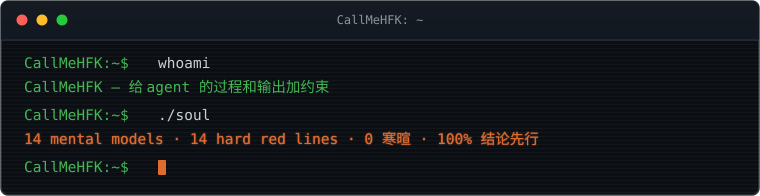

CallMeHFK:~$ whoami
CallMeHFK — 技术与业务交界处的系统思考者
CallMeHFK:~$ ./soul
14 mental models · 14 hard red lines · 0 寒暄 · 100% 结论先行
CallMeHFK:~$
CallMeHFK · UTC+8
系统思考者 —— 站在技术与业务的交界处
用数据与事实做决策，不用感觉。先盘点再行动，确认了快速推进。
质量是底线，效率是目标。
图解
Diagram多智能体共识排序
Agent Skill 生态闭环
决策边界
项目与成果
自建 · 多宿主接入自建
| 项目 | 做了什么 | 事实 |
|---|---|---|
| agent-shepherd | 智能体过程监督插件 | 观测 QwenPaw / Claude Code / Codex 的推理与工具调用，偏航时注入纠正。两层策略：Tier 0 确定性检测器（循环、回归、越权编辑、binding drift、context rot、CUSUM 漂移告警），Tier 1 PRM 式 LLM 打分器（只在自然检查点、或 CUSUM 逼近告警线时唤醒）。漂移阈值由蒙特卡洛仿真标定到会话级误报预算，判定阈值由 conformal risk control 按实测结果再拟合；工具结局先按结构化证据三态分类（failed / ok / unknown）再退回错误文法。shepherd eval 是离线反事实基准：单点注故障，报每检测器的精确率、召回、检测延迟与监督成本，CI 里跑。 |
| dispatch-guard | 编排 Agent 的输出路由中间件 | 把派发约束从 system prompt 挪到工具接缝：on_acting 拦截交付物形状的写入并 deny，回给它「该派给谁」；shell 侧交付物启发式默认只 warn（可开 shell_enforce 关掉重定向旁路），spawn_subagent 作为配置层关停之外的兜底 deny；读操作与基础文件读写永不拦截。路由表 routes.json 按 mtime 热切、加载时做规则自审（矛盾、死规则、未知 mode）。纯标准库、零 pip 依赖、无遥测；65 项测试、2,294 行 Python，CI 通过，已发 v0.1.7（qwenpaw plugin install <release URL> 一行可用） |
| qwenpaw-openviking | 长期语义记忆接入插件 | 把 OpenViking（Volcengine 开源的 Agent 长期语义记忆引擎）上游那套 Node.js stdio MCP 代理移植成 QwenPaw 原生插件：纯 Python、不起 Node 运行时、零第三方依赖。注册 7 个原生工具 + 5 个 Skill（教 agent 走 recall → work → persist 闭环），startup / shutdown 钩子各探测一次且全部 fail-open——服务挂了只降级成告警，不弄坏宿主；工具包装从不把异常抛进运行时，认证失败、超时、不可达一律回结构化错误串交给模型处置。40 项测试、1,594 行，CI 通过，v0.1.0 一行安装 |
| site-kg | 站点 → 知识图谱 → MCP 服务 | 给一个站点 URL，它爬站、建图、通过 MCP 把图交给 AI agent。清单探测按 objects.inv（Sphinx）→ navtreeindex0.js（Doxygen 的 index.html 是 JS 壳，没有静态链接）→ sitemap.xml → 同源 BFS 逐级降级，不从本地文件名反猜页面清单；边只从语料里推，站点没有交叉引用就判 NOT-READY 而不是画一团装饰性线团，绝不编造链接；结构层（检索 / 取页 / 邻居 / 站统计）不需要 LLM，配了 LLM_API_KEY 才挂可选的语义层。12 项测试、1,320 行 Python，CI 通过 |
| qwenpaw-consensus-rank | 多评审 LLM 共识排序插件 | 多模型独立打分 → Borda 聚合，输出交叉一致性报告；QwenPaw 原生插件，v1.4.9 修掉了对宿主版本的过紧上界 |
| agent-task-callback | 跨 Agent 后台任务回调插件 | 补上 QwenPaw submit_to_agent 缺的 push 侧：常驻 watcher 线程轮询子任务，完成后把结果作为新一轮投递回注册方会话；含僵尸任务回收测试 |
| game-input-mcp | 游戏输入自动化 MCP Server | 鼠标/键盘控制的 MCP 工具集（stdio 传输），含屏幕截图、精确按压时长、可编排序列；面向游戏场景的低延迟输入注入 |
| Audio Driver | Windows APO 音频驱动 | 基于 WDK CBaseAudioProcessingObject + ATL 的 capture APO：AEC 双级链（16k 回声消除 → 因果流式降噪），CPU 用户态运行（~0.5% 单核）、无需 DSP/NPU |
| ScheduleCopilot | 多智能体排期风险识别系统 | 基于 AgentScope Agent Service + Agent Team 构建：Leader 编排 6 类 Worker 完成风险识别、知识检索、方案补全与优化、报告生成与反馈分析；配 10 个领域 Skill，另有长期记忆中间件、双通道日志与多租户隔离 |
适配与贡献
主线只有一条：把 Agent Skill / 插件生态接进别人的宿主。同一套 Skill 不改内容，换清单与路由即可落到 QwenPaw、Claude Code、Codex、Cursor、Qoder、ZCode；已合并上游 2 个（sepia、nacos），待审 3 个（ResearchStudio、SemaPLC、text-to-cad）。
| 项目 | 做了什么 | 事实 |
|---|---|---|
| sepia | QwenPaw 原生插件适配，已合并上游 | issue #244 → PR #250（MERGED 2026-09-17，+318/−25）：新增 .qwenpaw-plugin/ 插件包（plugin.json + plugin.py，复用同一批 Skill 并注册 /sepia 斜杠命令），同步更新三份 README 的 QwenPaw 安装说明。fork main 上另有未推上游的部分：把 QwenPaw 提为第五个安装目标、sync_skills.py 的 sha256 字节级同步校验 + 漂移即失败的 CI；并在 issue #274 反馈了零 Skill 静默安装问题。基于 StoryScope（arXiv:2604.03136）叙事结构检测 |
| ResearchStudio | 研究全流程 Skill 库的安装器扩展 | PR #60（open，2026-09-18，+289/−71）：在原生支持 Claude Code / Codex 的安装器里并列加上 QwenPaw 与 Qoder 两个宿主，Skill 本体零改动 |
| SemaPLC | 自然语言生成/校验 PLC 程序的 Agentic IDE 接入 | PR #6（open，2026-09-18，+2907/−2465）：QwenPaw / Claude Code / Cursor 三平台一键接入，顺带完成 Vitest 4 适配 |
| text-to-cad | CAD/CAE/CAM Skill 库多端分发，上游待审 | PR #429（open，+1207/−40）：把覆盖 STEP / STL / 3MF / URDF / SDF / SRDF 六种产物格式的 Skill 库一次性投递到 QwenPaw、ZCode、Cursor 三个安装目标，附各自的插件清单与同步脚本 |
| nacos | 早期上游贡献，已合并 | PR #12127（MERGED 2024-06-03，+198/−2）：响应 issue #12074，为 nacos 补 Python services sample code |
| ATPO（代码） | 论文研读与工程迁移 | 精读 ATPO: Adaptive Tree Policy Optimization（Cao et al., ICLR 2026；arXiv:2603.02216）——多轮医疗对话的自适应树搜索 RL——并走读其 VeRL 实现，把「不确定性驱动 rollout 预算分配」等机制映射到自身 Agent 系统：落出不确定性统计与结果回流原型（路由预测 + EMA 回传 + ECE 校准），用于采集门控与路由分档 |
| Agent Skill 工程化 | 技能蒸馏与质量门控 | 200 个已安装 Skill；SkillLens 9 维评分 + SkillOpt 门控优化闭环 |
能力画像
能力 × 证据第三方宿主接入
让同一套 Skill / 插件在 QwenPaw、Claude Code、Codex、Cursor、Qoder、ZCode 上跑起来：换清单与路由、不改技能本体；两个上游已合并、三个待审
多智能体系统
AgentScope / QwenPaw 多端派发，Agent Team 编排（Leader + 多 Worker），MCP 协议接入，技能路由与共识
智能体过程监督
两层策略引擎（确定性检测器 + PRM 式 LLM 判定），偏航检测与纠正注入；阈值靠蒙特卡洛仿真与 conformal risk control 标定，用离线反事实基准验证是否真的有用
Agent Skill 工程
技能安装、蒸馏、评分（SkillLens 9 维）、门控优化全链路；从零设计可复用的领域 Skill
插件与工具开发
QwenPaw 原生插件开发与适配（过程监督、共识排序、路由守卫、长期语义记忆、后台任务回调，以及已合并上游的 sepia）；MCP Server 工程化（游戏输入控制、站点转知识图谱）
Windows 音频驱动
APO 驱动全流程：官方 COM 契约 → 构建签名 → 测试机部署 → 验收交付；AEC + 流式降噪链路
论文研读与方法迁移
精读 ATPO（ICLR 2026）等 RL-for-agents 工作，把不确定性预算分配、树搜索信用分配等机制迁移到自建 Agent 系统
算法与数据
数据驱动的参数与方案选型，统计口径与校准评估（EMA 回流、ECE、CUSUM、CRC）
嵌入式与固件
Renode 周期精确在环：裸机 Cortex-M4F 固件与 float32 参考实现逐位对齐；仿真器没实现的计数器用差分采样反推，性能结论落到指令级证据
工业软件
TPM 数字员工平台部署，TDMS 缺陷提取流水线
技术栈
Badges运行原则
principles.txt[0]先盘点，再行动建立基线 → 改进 → 对比基线，不盲目启动
[1]数据驱动不迷信源码 > 配置 > 运行态；禁止口算，工具算完再输出
[2]逐字保真源数据神圣不可改；可加标注，禁止「优化」改写
[3]物理极限即边界参数调优空间可迭代，碰物理上限立即转向，不死磕
[4]诚实纠错新数据推翻旧结论 → 明确记录「上一轮我说 X 是错误的」
[5]工具链即基础设施按任务安装不膨胀；必须有退路，否则不上
CallMeHFK:~$
当前
in-progress- 智能体过程监督与路由约束 — agent-shepherd 两层监督策略引擎（Tier 0 确定性检测 + Tier 1 LLM 打分，161 项测试，反事实基准跑在 CI）· dispatch-guard 把派发规则从 prompt 移进工具接缝
- 多智能体工具链 — QwenPaw 多端派发、Agent Team 编排、技能蒸馏（200 Skill）、共识排序、路由守卫、长期语义记忆、后台任务回调
- 站点知识图谱 — site-kg：给 URL 就爬站建图并以 MCP 提供检索与图遍历，边只从语料推、证据不足判 NOT-READY
- 开源 — 上游已合并 sepia QwenPaw 插件（2026-09-17）· 待审 ResearchStudio #60 / SemaPLC #6 / text-to-cad #429
- 系统级开发 — Windows APO 音频驱动（AEC + 流式降噪），CPU 用户态实时运行
- 嵌入式与固件 — Renode 上跑裸机固件在环，与 float32 参考实现逐位对齐后再下性能结论
「写得进去的部分，已经足够强大。」—— 但做不出来，比说不清楚更致命。